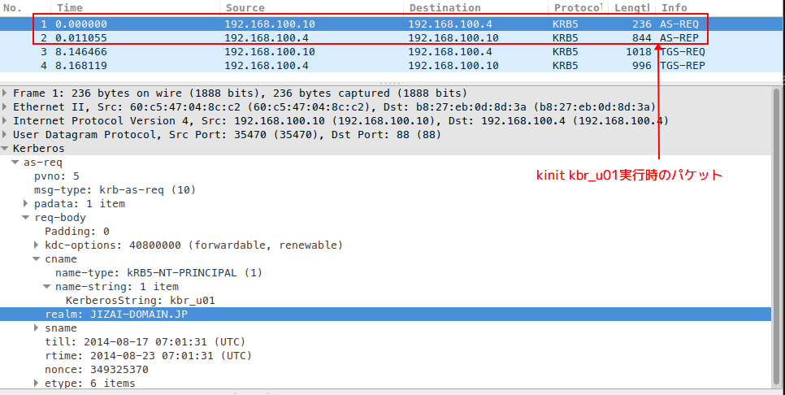
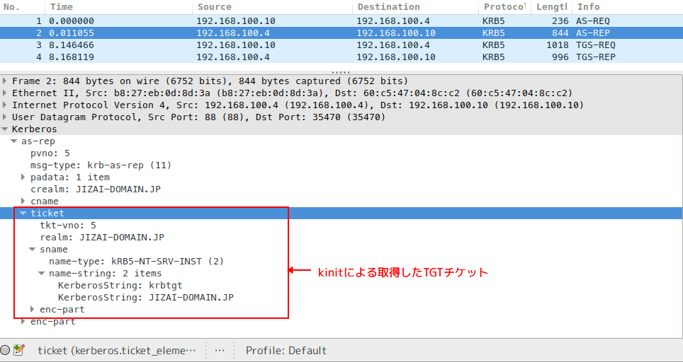
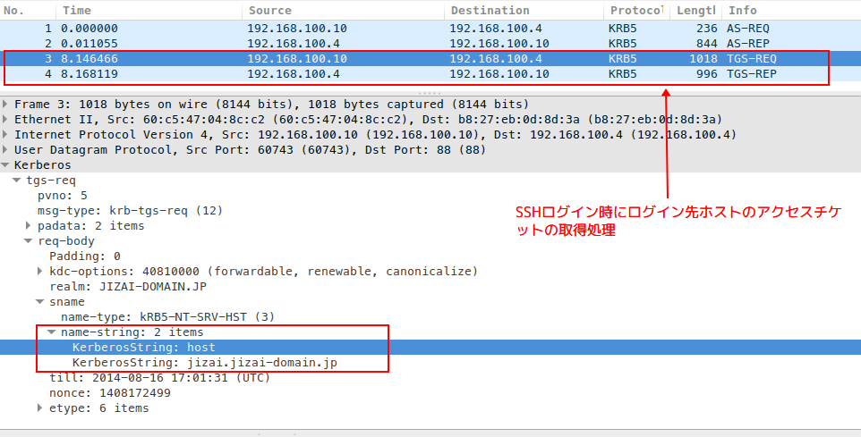
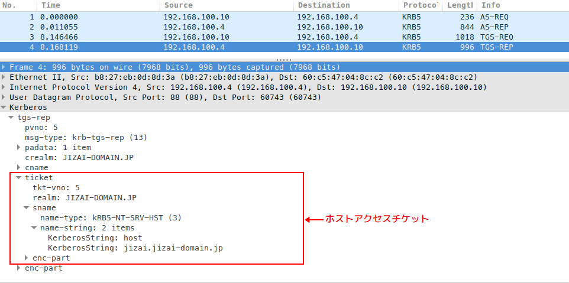

Table of Contents
夏休み中にKerbrose認証環境の構築復習を行いました。ここでメモしておきます。
1 時刻を合わせる
kerbroseチケットの有効期限及び、クライアントマシンタイムスタンプチェックをより正確に 働けるようにするため。同一レルムのマシンの時刻を同期化しておきましょう。
KDCサーバに ntp サービスを立ち上げて、他のマシンからKDCサーバの ntp サービスを使
用するようにする。
1.1 NTPサービス構築手順
sudo pacman -S ntp でntpパッケージをインストールする。インストールされたファイル一
覧は以下となります。
[akira@pipi ~]$ sudo pacman -Ql ntp ntp /etc/ ntp /etc/ntp.conf ★NTPサービス設定ファイル ntp /usr/ ntp /usr/bin/ ntp /usr/bin/calc_tickadj ntp /usr/bin/ntp-keygen ntp /usr/bin/ntp-wait ntp /usr/bin/ntpd ntp /usr/bin/ntpdate ntp /usr/bin/ntpdc ntp /usr/bin/ntpq ntp /usr/bin/ntptime ntp /usr/bin/ntptrace ntp /usr/bin/sntp ntp /usr/bin/tickadj ntp /usr/lib/ ntp /usr/lib/systemd/ ntp /usr/lib/systemd/ntp-units.d/ ntp /usr/lib/systemd/ntp-units.d/50-ntp.list ntp /usr/lib/systemd/system/ ntp /usr/lib/systemd/system/ntpd.service ★ntpdデーモン起動用サービス定義ファイル ntp /usr/lib/systemd/system/ntpdate.service ★ntpdプロセスで時刻を同期化するOneShotサービス定義ファイル ntp /usr/share/ ntp /usr/share/doc/ ...中略...
/etc/ntp.conf ファイルサンプル
# With the default settings below, ntpd will only synchronize your clock. # # For details, see: # - the ntp.conf man page # - http://support.ntp.org/bin/view/Support/GettingStarted # - https://wiki.archlinux.org/index.php/Network_Time_Protocol_daemon # Associate to public NTP pool servers; see http://www.pool.ntp.org/ server 0.jp.pool.ntp.org iburst ★物理的に近いサーバープールを使用する server 1.jp.pool.ntp.org iburst server 2.jp.pool.ntp.org iburst server 3.jp.pool.ntp.org iburst # ネットが繋がらない時に自身を NTP サーバーに変身する server 127.127.1.1 ★LAN内のマシンにntpサービスを継続提供するための設定 fudge 127.127.1.1 stratum 12 # Only allow read-only access from localhost restrict default noquery nopeer restrict 127.0.0.1 restrict ::1 # Location of drift file driftfile /var/lib/ntp/ntp.drift # Location of lof file logfile /var/log/ntp.log ★ログ出力先の指定 # NOTE: If you run dhcpcd and have lines like 'restrict' and 'fudge' appearing # here, be sure to add '-Y -N' to the dhcpcd_ethX variables in /etc/conf.d/net
サービスを有効化して起動する。
$ sudo systemctl enable ntpd.service Created symlink from /etc/systemd/system/multi-user.target.wants/ntpd.service to /usr/lib/systemd/system/ntpd.service. $ sudo systemctl start ntpd.service
1.2 NTPクライアントの設定
ntpクライアントは ntp パッケージの ntpdate.service サービスを利用してマシン起動時
にLAN内のntpサービスと時刻同期化を行います。
LAN内のntpサービスを利用するために /etc/ntp.conf にntpサーバのURLをLAN内のntpサー
バに指すように設定を行う。
[akira@mimi ~]$ cat /etc/ntp.conf # LAN内のntpサービスを利用する server 192.168.100.4 # Only allow read-only access from localhost restrict default noquery nopeer restrict 127.0.0.1 restrict ::1 # Location of drift file driftfile /var/lib/ntp/ntp.drift
ntpdate.service を起動する
$ sudo systemctl enable ntpdate.service Created symlink from /etc/systemd/system/multi-user.target.wants/ntpdate.service to /usr/lib/systemd/system/ntpdate.service. $ sudo systemctl start ntpdate.service
2 Kerbroseサービスの構築手順
MITの KerbroseV を用いて構築します。まず、 pacman で kbr5 パッケージをインストー
ルしましょう。
$ sudo pacman -S krb5 warning: krb5-1.12.1-1 is up to date -- reinstalling resolving dependencies... looking for inter-conflicts... Packages (1): krb5-1.12.1-1 Total Installed Size: 3.60 MiB Net Upgrade Size: 0.00 MiB :: Proceed with installation? [Y/n] (1/1) checking keys in keyring [########################################################] 100% (1/1) checking package integrity [########################################################] 100% (1/1) loading package files [########################################################] 100% (1/1) checking for file conflicts [########################################################] 100% (1/1) checking available disk space [########################################################] 100% (1/1) reinstalling krb5 [########################################################] 100% synchronizing filesystem... $
kbr5パッケージの構成を以下のようになります、主要ファイルの説明は ★ マークにて解説
する。
$ sudo pacman -Ql krb5 krb5 /etc/ krb5 /etc/krb5.conf ★Kerbrose認証システム参加するための設定ファイル krb5 /usr/ krb5 /usr/bin/ krb5 /usr/bin/gss-client krb5 /usr/bin/gss-server krb5 /usr/bin/k5srvutil krb5 /usr/bin/kadmin ★Kerbroseの認証データをメンテナンスするためのツール krb5 /usr/bin/kadmin.local ★kadminと同じが、ローカルのrootユーザでパスワード入力なしで利用可能 krb5 /usr/bin/kadmind ★kadminデーモンプロセス、tcp/udpで同じレルムに属するクライアントに管理サービスを提供する krb5 /usr/bin/kdb5_ldap_util krb5 /usr/bin/kdb5_util ★KDCデータベースメンテナンス用のツール krb5 /usr/bin/kdestroy ★ローカルマシンに取得済みのKerbroseチケットを破棄するためのツール krb5 /usr/bin/kinit ★TGTチケット取得用 krb5 /usr/bin/klist ★取得済みチケット一覧表示用 krb5 /usr/bin/kpasswd ★プリンシバルの認証パスワード変更用 krb5 /usr/bin/kprop krb5 /usr/bin/kpropd krb5 /usr/bin/kproplog krb5 /usr/bin/krb5-config krb5 /usr/bin/krb5-send-pr krb5 /usr/bin/krb5kdc krb5 /usr/bin/ksu krb5 /usr/bin/kswitch krb5 /usr/bin/ktutil krb5 /usr/bin/kvno krb5 /usr/bin/sclient krb5 /usr/bin/sim_client krb5 /usr/bin/sim_server krb5 /usr/bin/sserver krb5 /usr/bin/uuclient krb5 /usr/bin/uuserver krb5 /usr/include/ krb5 /usr/include/gssapi.h krb5 /usr/include/gssapi/ krb5 /usr/include/gssapi/gssapi.h krb5 /usr/include/gssapi/gssapi_ext.h krb5 /usr/include/gssapi/gssapi_generic.h krb5 /usr/include/gssapi/gssapi_krb5.h krb5 /usr/include/gssapi/mechglue.h krb5 /usr/include/gssrpc/ krb5 /usr/include/gssrpc/auth.h krb5 /usr/include/gssrpc/auth_gss.h krb5 /usr/include/gssrpc/auth_gssapi.h krb5 /usr/include/gssrpc/auth_unix.h krb5 /usr/include/gssrpc/clnt.h krb5 /usr/include/gssrpc/netdb.h krb5 /usr/include/gssrpc/pmap_clnt.h krb5 /usr/include/gssrpc/pmap_prot.h krb5 /usr/include/gssrpc/pmap_rmt.h krb5 /usr/include/gssrpc/rename.h krb5 /usr/include/gssrpc/rpc.h krb5 /usr/include/gssrpc/rpc_msg.h krb5 /usr/include/gssrpc/svc.h krb5 /usr/include/gssrpc/svc_auth.h krb5 /usr/include/gssrpc/types.h krb5 /usr/include/gssrpc/xdr.h krb5 /usr/include/kadm5/ krb5 /usr/include/kadm5/admin.h krb5 /usr/include/kadm5/chpass_util_strings.h krb5 /usr/include/kadm5/kadm_err.h krb5 /usr/include/kdb.h krb5 /usr/include/krad.h krb5 /usr/include/krb5.h krb5 /usr/include/krb5/ krb5 /usr/include/krb5/ccselect_plugin.h krb5 /usr/include/krb5/clpreauth_plugin.h krb5 /usr/include/krb5/hostrealm_plugin.h krb5 /usr/include/krb5/kadm5_hook_plugin.h krb5 /usr/include/krb5/kdcpreauth_plugin.h krb5 /usr/include/krb5/krb5.h krb5 /usr/include/krb5/localauth_plugin.h krb5 /usr/include/krb5/locate_plugin.h krb5 /usr/include/krb5/plugin.h krb5 /usr/include/krb5/preauth_plugin.h krb5 /usr/include/krb5/pwqual_plugin.h krb5 /usr/include/profile.h krb5 /usr/include/verto-module.h krb5 /usr/include/verto.h krb5 /usr/lib/ krb5 /usr/lib/krb5/ krb5 /usr/lib/krb5/plugins/ krb5 /usr/lib/krb5/plugins/kdb/ krb5 /usr/lib/krb5/plugins/kdb/db2.so krb5 /usr/lib/krb5/plugins/kdb/kldap.so krb5 /usr/lib/krb5/plugins/preauth/ krb5 /usr/lib/krb5/plugins/preauth/otp.so krb5 /usr/lib/krb5/plugins/preauth/pkinit.so krb5 /usr/lib/libgssapi_krb5.so krb5 /usr/lib/libgssapi_krb5.so.2 krb5 /usr/lib/libgssapi_krb5.so.2.2 krb5 /usr/lib/libgssrpc.so krb5 /usr/lib/libgssrpc.so.4 krb5 /usr/lib/libgssrpc.so.4.2 krb5 /usr/lib/libk5crypto.so krb5 /usr/lib/libk5crypto.so.3 krb5 /usr/lib/libk5crypto.so.3.1 krb5 /usr/lib/libkadm5clnt.so krb5 /usr/lib/libkadm5clnt_mit.so krb5 /usr/lib/libkadm5clnt_mit.so.9 krb5 /usr/lib/libkadm5clnt_mit.so.9.0 krb5 /usr/lib/libkadm5srv.so krb5 /usr/lib/libkadm5srv_mit.so krb5 /usr/lib/libkadm5srv_mit.so.9 krb5 /usr/lib/libkadm5srv_mit.so.9.0 krb5 /usr/lib/libkdb5.so krb5 /usr/lib/libkdb5.so.7 krb5 /usr/lib/libkdb5.so.7.0 krb5 /usr/lib/libkdb_ldap.so krb5 /usr/lib/libkdb_ldap.so.1 krb5 /usr/lib/libkdb_ldap.so.1.0 krb5 /usr/lib/libkrad.so krb5 /usr/lib/libkrad.so.0 krb5 /usr/lib/libkrad.so.0.0 krb5 /usr/lib/libkrb5.so krb5 /usr/lib/libkrb5.so.3 krb5 /usr/lib/libkrb5.so.3.3 krb5 /usr/lib/libkrb5support.so krb5 /usr/lib/libkrb5support.so.0 krb5 /usr/lib/libkrb5support.so.0.1 krb5 /usr/lib/libverto.so krb5 /usr/lib/libverto.so.0 krb5 /usr/lib/libverto.so.0.0 krb5 /usr/lib/pkgconfig/ krb5 /usr/lib/pkgconfig/gssrpc.pc krb5 /usr/lib/pkgconfig/kadm-client.pc krb5 /usr/lib/pkgconfig/kadm-server.pc krb5 /usr/lib/pkgconfig/kdb.pc krb5 /usr/lib/pkgconfig/krb5-gssapi.pc krb5 /usr/lib/pkgconfig/krb5.pc krb5 /usr/lib/pkgconfig/mit-krb5-gssapi.pc krb5 /usr/lib/pkgconfig/mit-krb5.pc krb5 /usr/lib/systemd/ krb5 /usr/lib/systemd/system/ krb5 /usr/lib/systemd/system/krb5-kadmind.service ★KDCデータ管理サービス krb5 /usr/lib/systemd/system/krb5-kdc.service ★KDCサービス krb5 /usr/lib/systemd/system/krb5-kpropd.service krb5 /usr/lib/systemd/system/krb5-kpropd.socket krb5 /usr/lib/systemd/system/krb5-kpropd@.service krb5 /usr/share/ krb5 /usr/share/aclocal/ krb5 /usr/share/aclocal/ac_check_krb5.m4 krb5 /usr/share/doc/ krb5 /usr/share/doc/krb5/ krb5 /usr/share/doc/krb5/examples/ ★設定ファイルサンプル krb5 /usr/share/doc/krb5/examples/kdc.conf krb5 /usr/share/doc/krb5/examples/kerberos.ldif krb5 /usr/share/doc/krb5/examples/kerberos.schema krb5 /usr/share/doc/krb5/examples/krb5.conf krb5 /usr/share/doc/krb5/examples/services.append krb5 /usr/share/gnats/ krb5 /usr/share/gnats/mit krb5 /usr/share/licenses/ krb5 /usr/share/licenses/krb5/ krb5 /usr/share/licenses/krb5/LICENSE krb5 /usr/share/locale/ krb5 /usr/share/locale/en_US/ krb5 /usr/share/locale/en_US/LC_MESSAGES/ krb5 /usr/share/locale/en_US/LC_MESSAGES/mit-krb5.mo krb5 /usr/share/man/ krb5 /usr/share/man/man1/ krb5 /usr/share/man/man1/k5srvutil.1.gz krb5 /usr/share/man/man1/kadmin.1.gz krb5 /usr/share/man/man1/kdestroy.1.gz krb5 /usr/share/man/man1/kinit.1.gz krb5 /usr/share/man/man1/klist.1.gz krb5 /usr/share/man/man1/kpasswd.1.gz krb5 /usr/share/man/man1/krb5-config.1.gz krb5 /usr/share/man/man1/krb5-send-pr.1.gz krb5 /usr/share/man/man1/ksu.1.gz krb5 /usr/share/man/man1/kswitch.1.gz krb5 /usr/share/man/man1/ktutil.1.gz krb5 /usr/share/man/man1/kvno.1.gz krb5 /usr/share/man/man1/sclient.1.gz krb5 /usr/share/man/man5/ krb5 /usr/share/man/man5/.k5identity.5.gz krb5 /usr/share/man/man5/.k5login.5.gz krb5 /usr/share/man/man5/k5identity.5.gz krb5 /usr/share/man/man5/k5login.5.gz krb5 /usr/share/man/man5/kadm5.acl.5.gz krb5 /usr/share/man/man5/kdc.conf.5.gz krb5 /usr/share/man/man5/krb5.conf.5.gz krb5 /usr/share/man/man8/ krb5 /usr/share/man/man8/kadmin.local.8.gz krb5 /usr/share/man/man8/kadmind.8.gz krb5 /usr/share/man/man8/kdb5_ldap_util.8.gz krb5 /usr/share/man/man8/kdb5_util.8.gz krb5 /usr/share/man/man8/kprop.8.gz krb5 /usr/share/man/man8/kpropd.8.gz krb5 /usr/share/man/man8/kproplog.8.gz krb5 /usr/share/man/man8/krb5kdc.8.gz krb5 /usr/share/man/man8/sserver.8.gz krb5 /var/ krb5 /var/lib/ krb5 /var/lib/krb5kdc/ krb5 /var/lib/krb5kdc/kdc.conf ★KDC設定ファイル $
KDCサーバの設定 /var/lib/krb5kdc/kdc.conf
$ cat kdc.conf
[kdcdefaults]
kdc_ports = 750,88
[realms]
JIZAI-DOMAIN.JP = { ★レルムの定義
database_name = /var/lib/krb5kdc/principal ★KDCデータベースファイルの格納パス
acl_file = /var/lib/krb5kdc/kadm5.acl ★プリンシバルのアクセスコントロール定義
key_stash_file = /var/lib/krb5kdc/.k5.JIZAI-DOMAIN.JP ★KDCデータベース暗号化パスワードファイル
kdc_ports = 750,88 ★KDCサービスUDPポート
max_life = 10h 0m 0s ★発行チケットの有効時間
max_renewable_life = 7d 0h 0m 0s
}
$
プリンシバルのアクセスコントロールの定義 kadm5.acl
$ cat /var/lib/krb5kdc/kadm5.acl */admin@JIZAI-DOMAIN.JP * $
レルムに参加するホストに対しての設定 /etc/krb5.conf
$ cat /etc/krb5.conf
[libdefaults]
default_realm = JIZAI-DOMAIN.JP
dns_lookup_realm = false
dns_lookup_kdc = false
ticket_lifetime = 10h
renew_lifetime = 7d
forwardable = true ★TGTチケットの転送を可能にする
[realms]
JIZAI-DOMAIN.JP = {
kdc = pipi.jizai-domain.jp:88 ★KDCサーバ接続情報、DNSから自動取得も可能
admin_server = pipi.jizai-domain.jp:749 ★kadminサービス接続情報
default_domain = jizai-domain.jp
}
[domain_realm]
jizai-domain.jp = JIZAI-DOMAIN.JP
.jizai-domain.jp = JIZAI-DOMAIN.JP
[logging]
kdc = SYSLOG:INFO:LOCAL5
admin_server = SYSLOG:INFO:LOCAL5
$
KDCサーバでデータベースを初期化する
$ sudo kdb5_util create -s Loading random data Initializing database '/var/lib/krb5kdc/principal' for realm 'JIZAI-DOMAIN.JP', master key name 'K/M@JIZAI-DOMAIN.JP' ★データベース暗号化用プリンシバル：K/M@JIZAI-DOMAIN.JP You will be prompted for the database Master Password. It is important that you NOT FORGET this password. Enter KDC database master key: ★データベース暗号化用パスワード Re-enter KDC database master key to verify: $ ls -al /var/lib/krb5kdc ★データベース作成されることを確認する total 40 drwxr-xr-x 2 root root 4096 Aug 15 15:37 . drwxr-xr-x 31 root root 4096 Aug 15 00:00 .. -rw------- 1 root root 76 Aug 15 15:37 .k5.JIZAI-DOMAIN.JP ★データベースファイルのパスワードファイル -rw-r--r-- 1 root root 26 Aug 15 14:44 kadm5.acl ★アクセスコントロールファイル -rw-r--r-- 1 root root 288 Aug 15 14:40 kdc.conf -rw------- 1 root root 8192 Aug 15 15:37 principal ★データベースファイル本体 -rw------- 1 root root 8192 Aug 15 15:37 principal.kadm5 -rw------- 1 root root 0 Aug 15 15:37 principal.kadm5.lock -rw------- 1 root root 0 Aug 15 15:37 principal.ok $
KDCサーバにてrootアカウントでKDC管理用 root/admin プリンシバルを登録する。
$ sudo kadmin.local -p root/admin -q "addprinc root/admin" Authenticating as principal root/admin with password. WARNING: no policy specified for root/admin@JIZAI-DOMAIN.JP; defaulting to no policy Enter password for principal "root/admin@JIZAI-DOMAIN.JP": ★root/admin プリンシバルのパスワード Re-enter password for principal "root/admin@JIZAI-DOMAIN.JP": Principal "root/admin@JIZAI-DOMAIN.JP" created. ★プリンシバルフルネーム：root/admin@JIZAI-DOMAIN.JP $
KDCサービスを有効化して起動する
$ sudo systemctl enable krb5-kdc.service ★KDCサービス Created symlink from /etc/systemd/system/multi-user.target.wants/krb5-kdc.service to /usr/lib/systemd/system/krb5-kdc.service. $ sudo systemctl enable krb5-kadmind.service ★KDC管理用サービス Created symlink from /etc/systemd/system/multi-user.target.wants/krb5-kadmind.service to /usr/lib/systemd/system/krb5-kadmind.service. $ sudo systemctl start krb5-kdc.service $ sudo systemctl start krb5-kadmind.service ★ 使用ポート一覧 $ sudo netstat -nutpl | grep k tcp 0 0 0.0.0.0:749 0.0.0.0:* LISTEN 29474/kadmind tcp 0 0 0.0.0.0:464 0.0.0.0:* LISTEN 29474/kadmind tcp6 0 0 :::749 :::* LISTEN 29474/kadmind tcp6 0 0 :::464 :::* LISTEN 29474/kadmind udp 0 0 0.0.0.0:464 0.0.0.0:* 29474/kadmind udp 0 0 0.0.0.0:750 0.0.0.0:* 29470/krb5kdc udp 0 0 0.0.0.0:88 0.0.0.0:* 29470/krb5kdc udp6 0 0 fe80::ba27:ebff:fe0:464 :::* 29474/kadmind udp6 0 0 fe80::ba27:ebff:fe0:750 :::* 29470/krb5kdc udp6 0 0 fe80::ba27:ebff:fe0d:88 :::* 29470/krb5kdc
サービス起動時のログ
$ sudo tail -f /var/log/everything.log ★kdc起動 2014-08-15T15:55:29+09:00 pipi daemon info systemd[1]: Starting Kerberos 5 KDC... 2014-08-15T15:55:29+09:00 pipi daemon info systemd[1]: Started Kerberos 5 KDC. 2014-08-15T15:55:30+09:00 pipi local5 info krb5kdc[29867]: Loaded 2014-08-15T15:55:30+09:00 pipi local5 info krb5kdc[29867]: Loaded 2014-08-15T15:55:30+09:00 pipi local5 err krb5kdc[29867]: preauth pkinit failed to initialize: No realms configured correctly for pkinit support 2014-08-15T15:55:30+09:00 pipi local5 err krb5kdc[29867]: preauth pkinit failed to initialize: No realms configured correctly for pkinit support 2014-08-15T15:55:30+09:00 pipi local5 info krb5kdc[29867]: setting up network... 2014-08-15T15:55:30+09:00 pipi local5 info krb5kdc[29867]: setting up network... 2014-08-15T15:55:30+09:00 pipi local5 info krb5kdc[29867]: listening on fd 7: udp 0.0.0.0.88 (pktinfo) 2014-08-15T15:55:30+09:00 pipi local5 info krb5kdc[29867]: listening on fd 7: udp 0.0.0.0.88 (pktinfo) 2014-08-15T15:55:30+09:00 pipi local5 info krb5kdc[29867]: listening on fd 8: udp 0.0.0.0.750 (pktinfo) 2014-08-15T15:55:30+09:00 pipi local5 info krb5kdc[29867]: listening on fd 8: udp 0.0.0.0.750 (pktinfo) 2014-08-15T15:55:30+09:00 pipi local5 info krb5kdc[29867]: setsockopt(9,IPV6_V6ONLY,1) worked 2014-08-15T15:55:30+09:00 pipi local5 info krb5kdc[29867]: setsockopt(9,IPV6_V6ONLY,1) worked 2014-08-15T15:55:30+09:00 pipi local5 info krb5kdc[29867]: No realms configured correctly for pkinit support - Cannot request packet info for udp socket address :: port 88 2014-08-15T15:55:30+09:00 pipi local5 info krb5kdc[29867]: No realms configured correctly for pkinit support - Cannot request packet info for udp socket address :: port 88 2014-08-15T15:55:30+09:00 pipi local5 info krb5kdc[29867]: skipping unrecognized local address family 17 2014-08-15T15:55:30+09:00 pipi local5 info krb5kdc[29867]: skipping unrecognized local address family 17 2014-08-15T15:55:30+09:00 pipi local5 info krb5kdc[29867]: skipping unrecognized local address family 17 2014-08-15T15:55:30+09:00 pipi local5 info krb5kdc[29867]: skipping unrecognized local address family 17 2014-08-15T15:55:30+09:00 pipi local5 info krb5kdc[29867]: setsockopt(9,IPV6_V6ONLY,1) worked 2014-08-15T15:55:30+09:00 pipi local5 info krb5kdc[29867]: setsockopt(9,IPV6_V6ONLY,1) worked 2014-08-15T15:55:30+09:00 pipi local5 info krb5kdc[29867]: listening on fd 9: udp fe80::ba27:ebff:fe0d:8d3a%eth0.88 2014-08-15T15:55:30+09:00 pipi local5 info krb5kdc[29867]: listening on fd 9: udp fe80::ba27:ebff:fe0d:8d3a%eth0.88 2014-08-15T15:55:30+09:00 pipi local5 info krb5kdc[29867]: setsockopt(10,IPV6_V6ONLY,1) worked 2014-08-15T15:55:30+09:00 pipi local5 info krb5kdc[29867]: setsockopt(10,IPV6_V6ONLY,1) worked 2014-08-15T15:55:30+09:00 pipi local5 info krb5kdc[29867]: listening on fd 10: udp fe80::ba27:ebff:fe0d:8d3a%eth0.750 2014-08-15T15:55:30+09:00 pipi local5 info krb5kdc[29867]: listening on fd 10: udp fe80::ba27:ebff:fe0d:8d3a%eth0.750 2014-08-15T15:55:30+09:00 pipi local5 info krb5kdc[29867]: set up 4 sockets 2014-08-15T15:55:30+09:00 pipi local5 info krb5kdc[29867]: set up 4 sockets 2014-08-15T15:55:30+09:00 pipi local5 info krb5kdc[29867]: commencing operation 2014-08-15T15:55:30+09:00 pipi local5 info krb5kdc[29867]: commencing operation 2014-08-15T15:55:30+09:00 pipi daemon info krb5kdc[29867]: krb5kdc: starting... ★kadmind起動 2014-08-15T15:56:09+09:00 pipi daemon info systemd[1]: Starting Kerberos 5 administration server... 2014-08-15T15:56:09+09:00 pipi daemon info systemd[1]: Started Kerberos 5 administration server. 2014-08-15T15:56:09+09:00 pipi local5 info kadmind[29923]: No dictionary file specified, continuing without one. 2014-08-15T15:56:09+09:00 pipi local5 info kadmind[29923]: No dictionary file specified, continuing without one. 2014-08-15T15:56:09+09:00 pipi local5 info kadmind[29923]: setting up network... 2014-08-15T15:56:09+09:00 pipi local5 info kadmind[29923]: setting up network... 2014-08-15T15:56:09+09:00 pipi local5 info kadmind[29923]: listening on fd 7: udp 0.0.0.0.464 (pktinfo) 2014-08-15T15:56:09+09:00 pipi local5 info kadmind[29923]: listening on fd 7: udp 0.0.0.0.464 (pktinfo) 2014-08-15T15:56:09+09:00 pipi local5 info kadmind[29923]: setsockopt(8,IPV6_V6ONLY,1) worked 2014-08-15T15:56:09+09:00 pipi local5 info kadmind[29923]: setsockopt(8,IPV6_V6ONLY,1) worked 2014-08-15T15:56:09+09:00 pipi local5 info kadmind[29923]: Invalid argument - Cannot request packet info for udp socket address :: port 464 2014-08-15T15:56:09+09:00 pipi local5 info kadmind[29923]: Invalid argument - Cannot request packet info for udp socket address :: port 464 2014-08-15T15:56:09+09:00 pipi local5 info kadmind[29923]: skipping unrecognized local address family 17 2014-08-15T15:56:09+09:00 pipi local5 info kadmind[29923]: skipping unrecognized local address family 17 2014-08-15T15:56:09+09:00 pipi local5 info kadmind[29923]: skipping unrecognized local address family 17 2014-08-15T15:56:09+09:00 pipi local5 info kadmind[29923]: skipping unrecognized local address family 17 2014-08-15T15:56:09+09:00 pipi local5 info kadmind[29923]: setsockopt(8,IPV6_V6ONLY,1) worked 2014-08-15T15:56:09+09:00 pipi local5 info kadmind[29923]: setsockopt(8,IPV6_V6ONLY,1) worked 2014-08-15T15:56:09+09:00 pipi local5 info kadmind[29923]: listening on fd 8: udp fe80::ba27:ebff:fe0d:8d3a%eth0.464 2014-08-15T15:56:09+09:00 pipi local5 info kadmind[29923]: listening on fd 8: udp fe80::ba27:ebff:fe0d:8d3a%eth0.464 2014-08-15T15:56:09+09:00 pipi local5 info kadmind[29923]: setsockopt(9,IPV6_V6ONLY,1) worked 2014-08-15T15:56:09+09:00 pipi local5 info kadmind[29923]: setsockopt(9,IPV6_V6ONLY,1) worked 2014-08-15T15:56:09+09:00 pipi local5 info kadmind[29923]: listening on fd 10: tcp 0.0.0.0.464 2014-08-15T15:56:09+09:00 pipi local5 info kadmind[29923]: listening on fd 10: tcp 0.0.0.0.464 2014-08-15T15:56:09+09:00 pipi local5 info kadmind[29923]: listening on fd 9: tcp ::.464 2014-08-15T15:56:09+09:00 pipi local5 info kadmind[29923]: listening on fd 9: tcp ::.464 2014-08-15T15:56:09+09:00 pipi local5 info kadmind[29923]: listening on fd 11: rpc 0.0.0.0.749 2014-08-15T15:56:09+09:00 pipi local5 info kadmind[29923]: listening on fd 11: rpc 0.0.0.0.749 2014-08-15T15:56:09+09:00 pipi local5 info kadmind[29923]: setsockopt(12,IPV6_V6ONLY,1) worked 2014-08-15T15:56:09+09:00 pipi local5 info kadmind[29923]: setsockopt(12,IPV6_V6ONLY,1) worked 2014-08-15T15:56:09+09:00 pipi local5 info kadmind[29923]: listening on fd 12: rpc ::.749 2014-08-15T15:56:09+09:00 pipi local5 info kadmind[29923]: listening on fd 12: rpc ::.749 2014-08-15T15:56:09+09:00 pipi local5 info kadmind[29923]: set up 6 sockets 2014-08-15T15:56:09+09:00 pipi local5 info kadmind[29923]: set up 6 sockets 2014-08-15T15:56:09+09:00 pipi local5 info kadmind[29923]: Seeding random number generator 2014-08-15T15:56:09+09:00 pipi local5 info kadmind[29923]: Seeding random number generator 2014-08-15T15:56:09+09:00 pipi local5 info kadmind[29923]: starting 2014-08-15T15:56:09+09:00 pipi local5 info kadmind[29923]: starting 2014-08-15T15:56:09+09:00 pipi daemon info kadmind[29923]: kadmind: starting...
3 KDCにプリンシバルの登録
kadmin.local 登録した root/admin@JIZAI-DOMAIN.JP 管理プリンシバルを用いて、レルム
に参加している任意のマシンからテスト用プリンシバル登録操作を行います。以下の操作は全
てKDCサーバ側のデータベースに反映される、クライアント側には何も影響しない。
★kadminサービスへ接続する $ kadmin -p root/admin Authenticating as principal root/admin with password. Password for root/admin@JIZAI-DOMAIN.JP: ★１：プリンシバル認証用パスワードのポリシーを作成する kadmin: add_policy -maxlife 180day -minlife 0day -minlength 8 -minclasses 2 -history 8 users_policy ★２：作成したポリシーを用いてkbr_u01プリンシバルを登録する kadmin: addprinc -policy users_policy kbr_u01 Enter password for principal "kbr_u01@JIZAI-DOMAIN.JP": Re-enter password for principal "kbr_u01@JIZAI-DOMAIN.JP": Principal "kbr_u01@JIZAI-DOMAIN.JP" created. ★プリンシバルのフルネーム ★３：kbr_u02プリンシバルを登録する kadmin: addprinc -policy users_policy kbr_u02 Enter password for principal "kbr_u02@JIZAI-DOMAIN.JP": Re-enter password for principal "kbr_u02@JIZAI-DOMAIN.JP": Principal "kbr_u02@JIZAI-DOMAIN.JP" created. ★４：：プリンシバル一覧の表示 kadmin: list_principals K/M@JIZAI-DOMAIN.JP kadmin/admin@JIZAI-DOMAIN.JP kadmin/changepw@JIZAI-DOMAIN.JP kadmin/pipi.jizai-domain.jp@JIZAI-DOMAIN.JP ★kadminサービスプリンシバル kbr_u01@JIZAI-DOMAIN.JP ★通常アカウント kbr_u02@JIZAI-DOMAIN.JP krbtgt/JIZAI-DOMAIN.JP@JIZAI-DOMAIN.JP ★TGSサービスプリンシバル root/admin@JIZAI-DOMAIN.JP ★管理用プリンシバル kadmin:
プリンシバル登録時、kadminサービス側のログ
★接続時
2014-08-15T15:57:35+09:00 pipi local5 info krb5kdc[29867]: AS_REQ (6 etypes {18 17 16 23 25 26}) 192.168.100.4: ISSUE: authtime 1408085855, etypes {rep=18 tkt=18 ses=18}, root/admin@JIZAI-DOMAIN.JP for kadmin/pipi.jizai-domain.jp@JIZAI-DOMAIN.JP
2014-08-15T15:57:35+09:00 pipi local5 info krb5kdc[29867]: AS_REQ (6 etypes {18 17 16 23 25 26}) 192.168.100.4: ISSUE: authtime 1408085855, etypes {rep=18 tkt=18 ses=18}, root/admin@JIZAI-DOMAIN.JP for kadmin/pipi.jizai-domain.jp@JIZAI-DOMAIN.JP
2014-08-15T15:57:39+09:00 pipi local5 notice kadmind[29923]: Request: kadm5_init, root/admin@JIZAI-DOMAIN.JP, success, client=root/admin@JIZAI-DOMAIN.JP, service=kadmin/pipi.jizai-domain.jp@JIZAI-DOMAIN.JP, addr=192.168.100.4, vers=4, flavor=6
2014-08-15T15:57:39+09:00 pipi local5 notice kadmind[29923]: Request: kadm5_init, root/admin@JIZAI-DOMAIN.JP, success, client=root/admin@JIZAI-DOMAIN.JP, service=kadmin/pipi.jizai-domain.jp@JIZAI-DOMAIN.JP, addr=192.168.100.4, vers=4, flavor=6
★１
2014-08-15T16:01:55+09:00 pipi local5 notice kadmind[29923]: Request: kadm5_create_policy, users_policy, success, client=root/admin@JIZAI-DOMAIN.JP, service=kadmin/pipi.jizai-domain.jp@JIZAI-DOMAIN.JP, addr=192.168.100.4
2014-08-15T16:01:55+09:00 pipi local5 notice kadmind[29923]: Request: kadm5_create_policy, users_policy, success, client=root/admin@JIZAI-DOMAIN.JP, service=kadmin/pipi.jizai-domain.jp@JIZAI-DOMAIN.JP, addr=192.168.100.4
★２
2014-08-15T16:03:18+09:00 pipi local5 notice kadmind[29923]: Request: kadm5_get_policy, users_policy, success, client=root/admin@JIZAI-DOMAIN.JP, service=kadmin/pipi.jizai-domain.jp@JIZAI-DOMAIN.JP, addr=192.168.100.4
2014-08-15T16:03:18+09:00 pipi local5 notice kadmind[29923]: Request: kadm5_get_policy, users_policy, success, client=root/admin@JIZAI-DOMAIN.JP, service=kadmin/pipi.jizai-domain.jp@JIZAI-DOMAIN.JP, addr=192.168.100.4
2014-08-15T16:03:27+09:00 pipi local5 notice kadmind[29923]: Request: kadm5_create_principal, kbr_u01@JIZAI-DOMAIN.JP, success, client=root/admin@JIZAI-DOMAIN.JP, service=kadmin/pipi.jizai-domain.jp@JIZAI-DOMAIN.JP, addr=192.168.100.4
2014-08-15T16:03:27+09:00 pipi local5 notice kadmind[29923]: Request: kadm5_create_principal, kbr_u01@JIZAI-DOMAIN.JP, success, client=root/admin@JIZAI-DOMAIN.JP, service=kadmin/pipi.jizai-domain.jp@JIZAI-DOMAIN.JP, addr=192.168.100.4
★３
2014-08-15T16:04:11+09:00 pipi local5 notice kadmind[29923]: Request: kadm5_get_policy, users_policy, success, client=root/admin@JIZAI-DOMAIN.JP, service=kadmin/pipi.jizai-domain.jp@JIZAI-DOMAIN.JP, addr=192.168.100.4
2014-08-15T16:04:11+09:00 pipi local5 notice kadmind[29923]: Request: kadm5_get_policy, users_policy, success, client=root/admin@JIZAI-DOMAIN.JP, service=kadmin/pipi.jizai-domain.jp@JIZAI-DOMAIN.JP, addr=192.168.100.4
2014-08-15T16:04:18+09:00 pipi local5 notice kadmind[29923]: Request: kadm5_create_principal, kbr_u02@JIZAI-DOMAIN.JP, success, client=root/admin@JIZAI-DOMAIN.JP, service=kadmin/pipi.jizai-domain.jp@JIZAI-DOMAIN.JP, addr=192.168.100.4
2014-08-15T16:04:18+09:00 pipi local5 notice kadmind[29923]: Request: kadm5_create_principal, kbr_u02@JIZAI-DOMAIN.JP, success, client=root/admin@JIZAI-DOMAIN.JP, service=kadmin/pipi.jizai-domain.jp@JIZAI-DOMAIN.JP, addr=192.168.100.4
★４
2014-08-15T16:05:27+09:00 pipi local5 notice kadmind[29923]: Request: kadm5_get_principals, *, success, client=root/admin@JIZAI-DOMAIN.JP, service=kadmin/pipi.jizai-domain.jp@JIZAI-DOMAIN.JP, addr=192.168.100.4
2014-08-15T16:05:27+09:00 pipi local5 notice kadmind[29923]: Request: kadm5_get_principals, *, success, client=root/admin@JIZAI-DOMAIN.JP, service=kadmin/pipi.jizai-domain.jp@JIZAI-DOMAIN.JP, addr=192.168.100.4
4 KDCデータベースのバックアップ
kdb5_util dump 、 kdb5_util load コマンドを用いてKDCデータベースをバックアップと
リストアすることができる。リストア時にKDCサービスを停止する必要があります。
$ sudo kdb5_util dump /var/lib/krb5kdc/kdc_dump $ ls -al /var/lib/krb5kdc/ total 52 drwxr-xr-x 2 root root 4096 Aug 15 16:11 . drwxr-xr-x 31 root root 4096 Aug 15 00:00 .. -rw------- 1 root root 76 Aug 15 15:37 .k5.JIZAI-DOMAIN.JP -rw-r--r-- 1 root root 26 Aug 15 14:44 kadm5.acl -rw-r--r-- 1 root root 288 Aug 15 14:40 kdc.conf -rw-r--r-- 1 root root 304 Aug 15 14:28 kdc.conf.ogin -rw------- 1 root root 5167 Aug 15 16:11 kdc_dump ★バックアップ -rw------- 1 root root 1 Aug 15 16:11 kdc_dump.dump_ok -rw------- 1 root root 8192 Aug 15 16:04 principal -rw------- 1 root root 8192 Aug 15 16:01 principal.kadm5 -rw------- 1 root root 0 Aug 15 15:37 principal.kadm5.lock -rw------- 1 root root 0 Aug 15 16:04 principal.ok $
5 Kerberos認証の流れを確認する
シナリオ、レルムに参考しているホスト mimi にて kinit kbr_u01 でkbr_u01ユーザプリン
シバル認証を通してTGTチケットして、TGTチケットを用いてレルムに参考している別のホスト
jizai にSSHでSSOを実現する。
[レルム:JIZAI=DOMAIN.JP]
<<KDC>> pipi.jizai-domain.jp
+---------------------+ ①kinit kbr_u01 +----------------------------------------------------+
|mimi.jizai-domain.jp |------------------->| A|ユーザ ：kbr_u01@JIZAI-DOMAIN.JP |
| |<---TGTチケット-----| B|ホスト ：jizai/jizai-domain.jp@JIZAI-DOMAIN.JP |
| | | C|サービス：krbgtg/JIZAI-DOMAIN.JP@JIZAI-DOMAIN.JP |
| |------TGS-REQ------>| |
| |<-----TGS-RES-------| |
| | ③Bホストチケット | |
+---------+-----------+ +----------------------------------------------------+
|
②ssh -o GSSAPIAuthentication=yes kbr_u01@jizai.jizai-domai.jp
|
+---------+-----------+
|jizai.jizai-domain.jp|
| |
| |
+---------------------+
検証の前提条件
- KDCにkbr_u01ユーザプリンシバルが登録済み
- KDCに
jizaiホストプリンシバルが登録済み jizaiホストにsshdのGSSAPIAuthenticationオプションが有効であるjizaiホストの/etc/passwdファイルにkbr_u01アカウントが登録済み
jizai ホストプリンシバルの登録
★以下の作業は jizai ホストで行う ★KDCのkadminサービスへ接続する $ sudo kadmin -p root/admin Authenticating as principal root/admin with password. Password for root/admin@JIZAI-DOMAIN.JP: ★１：randkeyオプションでランダムなパスワードを用いて、ホストプリンシバルを登録する kadmin: addprinc -randkey host/jizai.jizai-domain.jp WARNING: no policy specified for host/jizai.jizai-domain.jp@JIZAI-DOMAIN.JP; defaulting to no policy Principal "host/jizai.jizai-domain.jp@JIZAI-DOMAIN.JP" created. ★２：ホストプリンシバル認証用鍵（パスワード）をローカルシステムに保存する kadmin: ktadd host/jizai.jizai-domain.jp Entry for principal host/mimi.jizai-domain.jp with kvno 5, encryption type aes256-cts-hmac-sha1-96 added to keytab FILE:/etc/krb5.keytab. Entry for principal host/mimi.jizai-domain.jp with kvno 5, encryption type aes128-cts-hmac-sha1-96 added to keytab FILE:/etc/krb5.keytab. Entry for principal host/mimi.jizai-domain.jp with kvno 5, encryption type des3-cbc-sha1 added to keytab FILE:/etc/krb5.keytab. Entry for principal host/mimi.jizai-domain.jp with kvno 5, encryption type arcfour-hmac added to keytab FILE:/etc/krb5.keytab. kadmin: quit ★４：ローカルシステムに保存されたホストプリンシバルの鍵を確認する $ sudo klist -k /etc/krb5.keytab Keytab name: FILE:/etc/krb5.keytab KVNO Principal ---- -------------------------------------------------------------------------- 7 host/jizai.jizai-domain.jp@JIZAI-DOMAIN.JP 7 host/jizai.jizai-domain.jp@JIZAI-DOMAIN.JP 7 host/jizai.jizai-domain.jp@JIZAI-DOMAIN.JP 7 host/jizai.jizai-domain.jp@JIZAI-DOMAIN.JP $
jizai ホストにテスト用プリンシバル kbr_u01 をシステムローカルユーザとして登録する。
[akira@jizai ~]$ sudo useradd kbr_u01 ★kbr_u01ユーザ登録 [akira@jizai ~]$ getent passwd | grep kbr ★kbr_u01ユーザ登録の確認 kbr_u01:x:5013:5013::/home/kbr_u01:/bin/bash [akira@jizai ~]$
mimi ホストにて kinit コマンドで kbr_u01 プリンシバル認証して TGTチケットを取得
する。
[root@mimi-air ~]# klist -5 ★チケット一覧確認 klist: Credentials cache file '/tmp/krb5cc_0' not found [root@mimi-air ~]# kinit kbr_u01 ★kbr_u01プリンシバル認証する Password for kbr_u01@JIZAI-DOMAIN.JP: ★kbr_u01プリンシバルに対応する鍵のパスワードを入力する [akira@mimi ~]$ klist -5 ★チケット一覧確認 Ticket cache: FILE:/tmp/krb5cc_1000 Default principal: kbr_u01@JIZAI-DOMAIN.JP ★← ユーザプリンシバルkbr_u01として認証 Valid starting Expires Service principal 2014-08-16T16:01:31 2014-08-17T02:01:31 krbtgt/JIZAI-DOMAIN.JP@JIZAI-DOMAIN.JP ★←TGTチケット renew until 2014-08-23T16:01:31 [root@mimi-air ~]#
mimi から jizai へSSO
★GSSAPIAuthenticationオプション有効でSSHログインする [akira@mimi ~]$ ssh -vvv -o GSSAPIAuthentication=yes kbr_u01@jizai.jizai-domain.jp OpenSSH_6.6.1, OpenSSL 1.0.1i 6 Aug 2014 debug1: Reading configuration data /home/akira/.ssh/config debug1: Reading configuration data /etc/ssh/ssh_config debug2: ssh_connect: needpriv 0 debug1: Connecting to jizai.jizai-domain.jp [192.168.100.3] port 22. debug1: Connection established. debug1: identity file /home/akira/.ssh/id_rsa type -1 debug1: identity file /home/akira/.ssh/id_rsa-cert type -1 debug3: Incorrect RSA1 identifier debug3: Could not load "/home/akira/.ssh/id_dsa" as a RSA1 public key debug1: identity file /home/akira/.ssh/id_dsa type 2 debug1: identity file /home/akira/.ssh/id_dsa-cert type -1 debug1: identity file /home/akira/.ssh/id_ecdsa type -1 debug1: identity file /home/akira/.ssh/id_ecdsa-cert type -1 debug1: identity file /home/akira/.ssh/id_ed25519 type -1 debug1: identity file /home/akira/.ssh/id_ed25519-cert type -1 debug1: Enabling compatibility mode for protocol 2.0 debug1: Local version string SSH-2.0-OpenSSH_6.6.1 debug1: Remote protocol version 2.0, remote software version OpenSSH_6.6.1 debug1: match: OpenSSH_6.6.1 pat OpenSSH_6.6.1* compat 0x04000000 debug2: fd 3 setting O_NONBLOCK debug3: load_hostkeys: loading entries for host "jizai.jizai-domain.jp" from file "/home/akira/.ssh/known_hosts" debug3: load_hostkeys: found key type ECDSA in file /home/akira/.ssh/known_hosts:16 debug3: load_hostkeys: loaded 1 keys debug3: order_hostkeyalgs: prefer hostkeyalgs: ecdsa-sha2-nistp256-cert-v01@openssh.com,ecdsa-sha2-nistp384-cert-v01@openssh.com,ecdsa-sha2-nistp521-cert-v01@openssh.com,ecdsa-sha2-nistp256,ecdsa-sha2-nistp384,ecdsa-sha2-nistp521 debug1: SSH2_MSG_KEXINIT sent debug1: SSH2_MSG_KEXINIT received debug2: kex_parse_kexinit: curve25519-sha256@libssh.org,ecdh-sha2-nistp256,ecdh-sha2-nistp384,ecdh-sha2-nistp521,diffie-hellman-group-exchange-sha256,diffie-hellman-group-exchange-sha1,diffie-hellman-group14-sha1,diffie-hellman-group1-sha1 debug2: kex_parse_kexinit: ecdsa-sha2-nistp256-cert-v01@openssh.com,ecdsa-sha2-nistp384-cert-v01@openssh.com,ecdsa-sha2-nistp521-cert-v01@openssh.com,ecdsa-sha2-nistp256,ecdsa-sha2-nistp384,ecdsa-sha2-nistp521,ssh-ed25519-cert-v01@openssh.com,ssh-rsa-cert-v01@openssh.com,ssh-dss-cert-v01@openssh.com,ssh-rsa-cert-v00@openssh.com,ssh-dss-cert-v00@openssh.com,ssh-ed25519,ssh-rsa,ssh-dss debug2: kex_parse_kexinit: aes128-ctr,aes192-ctr,aes256-ctr,arcfour256,arcfour128,aes128-gcm@openssh.com,aes256-gcm@openssh.com,chacha20-poly1305@openssh.com,aes128-cbc,3des-cbc,blowfish-cbc,cast128-cbc,aes192-cbc,aes256-cbc,arcfour,rijndael-cbc@lysator.liu.se debug2: kex_parse_kexinit: aes128-ctr,aes192-ctr,aes256-ctr,arcfour256,arcfour128,aes128-gcm@openssh.com,aes256-gcm@openssh.com,chacha20-poly1305@openssh.com,aes128-cbc,3des-cbc,blowfish-cbc,cast128-cbc,aes192-cbc,aes256-cbc,arcfour,rijndael-cbc@lysator.liu.se debug2: kex_parse_kexinit: hmac-md5-etm@openssh.com,hmac-sha1-etm@openssh.com,umac-64-etm@openssh.com,umac-128-etm@openssh.com,hmac-sha2-256-etm@openssh.com,hmac-sha2-512-etm@openssh.com,hmac-ripemd160-etm@openssh.com,hmac-sha1-96-etm@openssh.com,hmac-md5-96-etm@openssh.com,hmac-md5,hmac-sha1,umac-64@openssh.com,umac-128@openssh.com,hmac-sha2-256,hmac-sha2-512,hmac-ripemd160,hmac-ripemd160@openssh.com,hmac-sha1-96,hmac-md5-96 debug2: kex_parse_kexinit: hmac-md5-etm@openssh.com,hmac-sha1-etm@openssh.com,umac-64-etm@openssh.com,umac-128-etm@openssh.com,hmac-sha2-256-etm@openssh.com,hmac-sha2-512-etm@openssh.com,hmac-ripemd160-etm@openssh.com,hmac-sha1-96-etm@openssh.com,hmac-md5-96-etm@openssh.com,hmac-md5,hmac-sha1,umac-64@openssh.com,umac-128@openssh.com,hmac-sha2-256,hmac-sha2-512,hmac-ripemd160,hmac-ripemd160@openssh.com,hmac-sha1-96,hmac-md5-96 debug2: kex_parse_kexinit: none,zlib@openssh.com,zlib debug2: kex_parse_kexinit: none,zlib@openssh.com,zlib debug2: kex_parse_kexinit: debug2: kex_parse_kexinit: debug2: kex_parse_kexinit: first_kex_follows 0 debug2: kex_parse_kexinit: reserved 0 debug2: kex_parse_kexinit: curve25519-sha256@libssh.org,ecdh-sha2-nistp256,ecdh-sha2-nistp384,ecdh-sha2-nistp521,diffie-hellman-group-exchange-sha256,diffie-hellman-group-exchange-sha1,diffie-hellman-group14-sha1,diffie-hellman-group1-sha1 debug2: kex_parse_kexinit: ssh-rsa,ssh-dss,ecdsa-sha2-nistp256,ssh-ed25519 debug2: kex_parse_kexinit: aes128-ctr,aes192-ctr,aes256-ctr,arcfour256,arcfour128,aes128-gcm@openssh.com,aes256-gcm@openssh.com,chacha20-poly1305@openssh.com,aes128-cbc,3des-cbc,blowfish-cbc,cast128-cbc,aes192-cbc,aes256-cbc,arcfour,rijndael-cbc@lysator.liu.se debug2: kex_parse_kexinit: aes128-ctr,aes192-ctr,aes256-ctr,arcfour256,arcfour128,aes128-gcm@openssh.com,aes256-gcm@openssh.com,chacha20-poly1305@openssh.com,aes128-cbc,3des-cbc,blowfish-cbc,cast128-cbc,aes192-cbc,aes256-cbc,arcfour,rijndael-cbc@lysator.liu.se debug2: kex_parse_kexinit: hmac-md5-etm@openssh.com,hmac-sha1-etm@openssh.com,umac-64-etm@openssh.com,umac-128-etm@openssh.com,hmac-sha2-256-etm@openssh.com,hmac-sha2-512-etm@openssh.com,hmac-ripemd160-etm@openssh.com,hmac-sha1-96-etm@openssh.com,hmac-md5-96-etm@openssh.com,hmac-md5,hmac-sha1,umac-64@openssh.com,umac-128@openssh.com,hmac-sha2-256,hmac-sha2-512,hmac-ripemd160,hmac-ripemd160@openssh.com,hmac-sha1-96,hmac-md5-96 debug2: kex_parse_kexinit: hmac-md5-etm@openssh.com,hmac-sha1-etm@openssh.com,umac-64-etm@openssh.com,umac-128-etm@openssh.com,hmac-sha2-256-etm@openssh.com,hmac-sha2-512-etm@openssh.com,hmac-ripemd160-etm@openssh.com,hmac-sha1-96-etm@openssh.com,hmac-md5-96-etm@openssh.com,hmac-md5,hmac-sha1,umac-64@openssh.com,umac-128@openssh.com,hmac-sha2-256,hmac-sha2-512,hmac-ripemd160,hmac-ripemd160@openssh.com,hmac-sha1-96,hmac-md5-96 debug2: kex_parse_kexinit: none,zlib@openssh.com debug2: kex_parse_kexinit: none,zlib@openssh.com debug2: kex_parse_kexinit: debug2: kex_parse_kexinit: debug2: kex_parse_kexinit: first_kex_follows 0 debug2: kex_parse_kexinit: reserved 0 debug2: mac_setup: setup hmac-md5-etm@openssh.com debug1: kex: server->client aes128-ctr hmac-md5-etm@openssh.com none debug2: mac_setup: setup hmac-md5-etm@openssh.com debug1: kex: client->server aes128-ctr hmac-md5-etm@openssh.com none debug1: sending SSH2_MSG_KEX_ECDH_INIT debug1: expecting SSH2_MSG_KEX_ECDH_REPLY debug1: Server host key: ECDSA 35:6c:0a:2e:7e:c2:5a:45:a0:05:f6:69:7b:7a:15:d0 debug3: load_hostkeys: loading entries for host "jizai.jizai-domain.jp" from file "/home/akira/.ssh/known_hosts" debug3: load_hostkeys: found key type ECDSA in file /home/akira/.ssh/known_hosts:16 debug3: load_hostkeys: loaded 1 keys debug3: load_hostkeys: loading entries for host "192.168.100.3" from file "/home/akira/.ssh/known_hosts" debug3: load_hostkeys: found key type ECDSA in file /home/akira/.ssh/known_hosts:3 debug3: load_hostkeys: loaded 1 keys debug1: Host 'jizai.jizai-domain.jp' is known and matches the ECDSA host key. debug1: Found key in /home/akira/.ssh/known_hosts:16 debug1: ssh_ecdsa_verify: signature correct debug2: kex_derive_keys debug2: set_newkeys: mode 1 debug1: SSH2_MSG_NEWKEYS sent debug1: expecting SSH2_MSG_NEWKEYS debug2: set_newkeys: mode 0 debug1: SSH2_MSG_NEWKEYS received debug1: Roaming not allowed by server debug1: SSH2_MSG_SERVICE_REQUEST sent debug2: service_accept: ssh-userauth debug1: SSH2_MSG_SERVICE_ACCEPT received debug2: key: /home/akira/.ssh/id_dsa (0x7f87e82679a0), debug2: key: /home/akira/.ssh/id_rsa ((nil)), debug2: key: /home/akira/.ssh/id_ecdsa ((nil)), debug2: key: /home/akira/.ssh/id_ed25519 ((nil)), debug1: Authentications that can continue: publickey,gssapi-with-mic debug3: start over, passed a different list publickey,gssapi-with-mic debug3: preferred gssapi-with-mic,publickey,keyboard-interactive,password debug3: authmethod_lookup gssapi-with-mic debug3: remaining preferred: publickey,keyboard-interactive,password debug3: authmethod_is_enabled gssapi-with-mic debug1: Next authentication method: gssapi-with-mic debug2: we sent a gssapi-with-mic packet, wait for reply debug1: Authentication succeeded (gssapi-with-mic). ★GSSAPIによるKerbrose認証が成功 Authenticated to jizai.jizai-domain.jp ([192.168.100.3]:22). ★ debug1: channel 0: new [client-session] debug3: ssh_session2_open: channel_new: 0 debug2: channel 0: send open debug1: Requesting no-more-sessions@openssh.com debug1: Entering interactive session. debug2: callback start debug2: fd 3 setting TCP_NODELAY debug3: packet_set_tos: set IP_TOS 0x10 debug2: client_session2_setup: id 0 debug2: channel 0: request pty-req confirm 1 debug2: channel 0: request shell confirm 1 debug2: callback done debug2: channel 0: open confirm rwindow 0 rmax 32768 debug2: channel_input_status_confirm: type 99 id 0 debug2: PTY allocation request accepted on channel 0 debug2: channel 0: rcvd adjust 2097152 debug2: channel_input_status_confirm: type 99 id 0 debug2: shell request accepted on channel 0 Last login: Sat Aug 16 12:36:44 2014 from mimi.jizai-domain.jp [kbr_u01@jizai ~]$ [kbr_u01@jizai ~]$ exit ログアウト [akira@mimi ~]$ klist -5 ★チケット一覧確認 Ticket cache: FILE:/tmp/krb5cc_1000 Default principal: kbr_u01@JIZAI-DOMAIN.JP Valid starting Expires Service principal 2014-08-16T16:01:31 2014-08-17T02:01:31 krbtgt/JIZAI-DOMAIN.JP@JIZAI-DOMAIN.JP renew until 2014-08-23T16:01:31 2014-08-16T16:01:39 2014-08-17T02:01:31 host/jizai.jizai-domain.jp@JIZAI-DOMAIN.JP ★jizaiのホストアクセス用のチケットが取得された renew until 2014-08-23T16:01:31 [akira@mimi ~]$
以下はkinitからsshグインまでKDC側で取得したkerbroseパケット通信の状況です。




6 LDAP+pam_krbでLinuxログイン認証
LDAPサーバにユーザエントリの登録を行う。
ユーザエントリの定義
# --- kbr_u01 ---
dn: uid=kbr_u01,ou=User,o=Linux Users,dc=jizai-domain,dc=jp
uid: kbr_u01
cn: Kerberose Test User01
uidNumber: 5101
gidNumber: 3101
userPassword: {CRYPT}x ★LDAPの簡易パスワード認証を利用しない
homeDirectory: /home/kbr_u01
loginShell: /bin/bash
gecos: Kerberose User01
objectClass: account
objectClass: posixAccount
# --- kbr_u02 ---
dn: uid=kbr_u02,ou=User,o=Linux Users,dc=jizai-domain,dc=jp
uid: kbr_u02
cn: Kerberose Test User02
uidNumber: 5102
gidNumber: 3102
userPassword: {CRYPT}x
homeDirectory: /home/kbr_u02
loginShell: /bin/bash
gecos: Kerberose User02
objectClass: account
objectClass: posixAccount
ldapadd で登録を行う
$ ldapadd -x -W -D "cn=Manager,dc=jizai-domain,dc=jp" -f 01.users.ldif Enter LDAP Password: adding new entry "uid=kbr_u01,ou=User,o=Linux Users,dc=jizai-domain,dc=jp" adding new entry "uid=kbr_u02,ou=User,o=Linux Users,dc=jizai-domain,dc=jp"
LinuxホストからLDAPユーザエントリ情報を参照するするようにする
nss-pam-ldapd をインストールして、 /etc/nslcd.conf にてLDAPサーバ接続設定を行う。
/etc/nsswitch.conf に以下のように情報源にldapを追加する。
$ cat /etc/nsswitch.conf passwd: files ldap group: files ldap shadow: files ldap netgroup: files ldap ★以上以外の内容、ここでは省略します。
nslcd.service サービスを起動して、LDAPからユーザ情報参照できることを確認する。
$ sudo systemctl start nslcd.service $ getent passwd root:x:0:0:root:/root:/bin/bash .....省略..... ★LDAPのユーザエントリ情報が表示されている kbr_u01:*:5101:3101:Kerberose User01:/home/kbr_u01:/bin/bash kbr_u02:*:5102:3102:Kerberose User02:/home/kbr_u02:/bin/bash
AURリポジトリからLinuxホストに pam_krb5 認証モジュールをインストールする
$ yaourt -S pam_krb5 ==> AUR から pam_krb5 の PKGBUILD をダウンロード... ...中略... ==> インストールを整理... -> 不要なファイルを削除... -> libtool ファイルを削除... -> static library ファイルを削除... -> man と info ページを圧縮... -> バイナリとライブラリから不要なシンボルを削除... ==> パッケージを作成 "pam_krb5"... -> .PKGINFO ファイルを生成... -> .MTREE ファイルを生成... -> パッケージの圧縮... ==> fakeroot 環境を終了。 ==> 作成完了: pam_krb5 2.4.9-1 (2014年 8月 16日 土曜日 16:38:32 JST) ==> pam_krb5 のインストールを続行しますか ? [Y/n] ==> [v]パッケージの中身確認 [c]heck package with namcap ==> ----------------------------------------- ==> y パッケージをロード... 警告: pam_krb5-2.4.9-1 は最新です -- 再インストール 依存関係を解決しています... 相互衝突をチェックしています... パッケージ (1): pam_krb5-2.4.9-1 Total Installed Size: 0.27 MiB Net Upgrade Size: 0.00 MiB :: インストールを行いますか？ [Y/n] (1/1) キーリングのキーを確認 [########################################################] 100% (1/1) パッケージの整合性をチェック [########################################################] 100% (1/1) パッケージファイルのロード [########################################################] 100% (1/1) ファイルの衝突をチェック [########################################################] 100% (1/1) 空き容量を確認 [########################################################] 100% (1/1) 再インストール pam_krb5 [########################################################] 100% [akira@jizai ~]$
pam_krb5 モジュールの確認
[akira@jizai ~]$ pacman -Ql pam_krb5 pam_krb5 /usr/ pam_krb5 /usr/bin/ pam_krb5 /usr/bin/afs5log pam_krb5 /usr/lib/ pam_krb5 /usr/lib/security/ pam_krb5 /usr/lib/security/pam_krb5.so ★モジュール自体 pam_krb5 /usr/lib/security/pam_krb5/ pam_krb5 /usr/lib/security/pam_krb5/pam_krb5_cchelper pam_krb5 /usr/share/ pam_krb5 /usr/share/locale/ ...中略... [akira@jizai ~]$
PAM認証設定１： /etc/pam.d/system-auth
#%PAM-1.0 auth sufficient pam_krb5.so ★Kerbrose認証連携 auth required pam_env.so auth required pam_unix.so try_first_pass nullok auth optional pam_permit.so account sufficient pam_krb5.so ★Kerbrose認証連携 account required pam_unix.so account optional pam_permit.so account required pam_time.so password sufficient pam_krb5.so ★Kerbrose認証連携 password required pam_unix.so try_first_pass nullok sha512 shadow password optional pam_permit.so #ユーザ、グループ単位にリソース制限を行う session required pam_limits.so session required pam_env.so #ログイン時にホームディレクトリが存在していなければ自動で生成する指定 session required pam_mkhomedir.so umask=077 #ログイン、ログアウト情報をauthログに出力する session required pam_unix.so session optional pam_krb5.so ★Kerbrose認証連携 session optional pam_permit.so
PAM認証設定２： /etc/pam.d/other
#%PAM-1.0 auth sufficient pam_krb5.so auth required pam_unix.so account sufficient pam_krb5.so account required pam_unix.so password sufficient pam_krb5.so password required pam_unix.so session required pam_unix.so
Linuxホストに kbr_u01 アカウントでログインする
$ ssh kbr_u01@jizai.jizai-domain.jp kbr_u01@jizai.jizai-domain.jp's password: ★KDCに登録されたkbr_u01プリンシバルのパスワードを入力する Last login: Sat Aug 16 16:29:21 2014 from mimi.jizai-domain.jp [kbr_u01@jizai ~]$ klist -5 ★チケット一覧を確認する Ticket cache: FILE:/tmp/krb5cc_5101_557rnl Default principal: kbr_u01@JIZAI-DOMAIN.JP Valid starting Expires Service principal 2014-08-16T16:46:53 2014-08-17T02:46:53 krbtgt/JIZAI-DOMAIN.JP@JIZAI-DOMAIN.JP ★TGTチケット renew until 2014-08-23T16:46:53 2014-08-16T16:46:53 2014-08-17T02:46:53 krbtgt/JIZAI-DOMAIN.JP@JIZAI-DOMAIN.JP ★なぜ２枚なのかは不明 renew until 2014-08-23T16:46:53 [kbr_u01@jizai ~]$ env | grep KRB5CCNAME KRB5CCNAME=FILE:/tmp/krb5cc_5101_557rnl ★Kerbrose認証チケットの保管場所は環境変数KRB5CCNAMEで参照できる [kbr_u01@jizai ~]$
ログイン時Linuxホストのログ
Aug 16 16:46:53 jizai sshd[22872]: pam_krb5[22872]: TGT verified using key for 'host/jizai.jizai-domain.jp@JIZAI-DOMAIN.JP' Aug 16 16:46:53 jizai sshd[22872]: pam_krb5[22872]: authentication succeeds for 'kbr_u01' (kbr_u01@JIZAI-DOMAIN.JP) ★Kerbrose認証成功 Aug 16 16:46:53 jizai sshd[22872]: Accepted password for kbr_u01 from 192.168.100.10 port 58136 ssh2 Aug 16 16:46:55 jizai sshd[22872]: pam_unix(sshd:session): session opened for user kbr_u01 by (uid=0) Aug 16 16:46:55 jizai systemd-logind[655]: New session c17 of user kbr_u01.